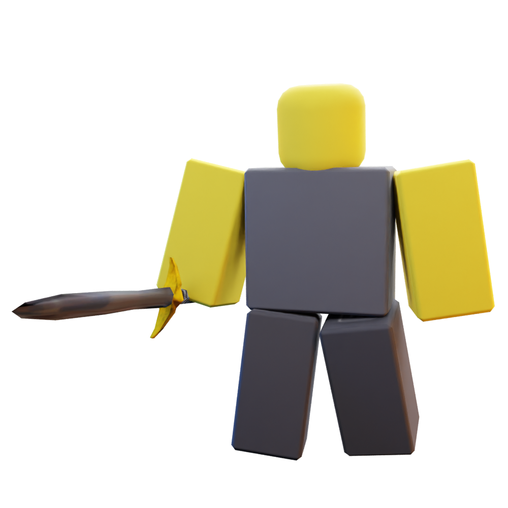
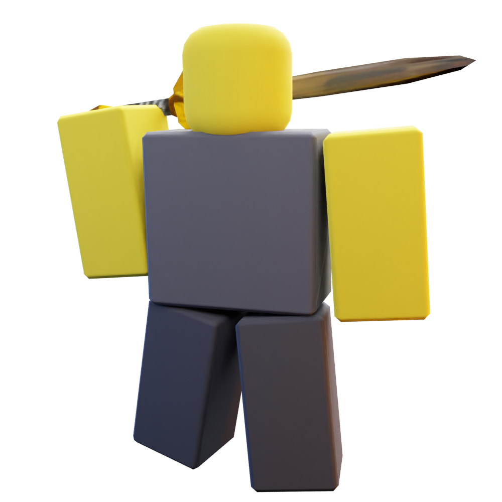
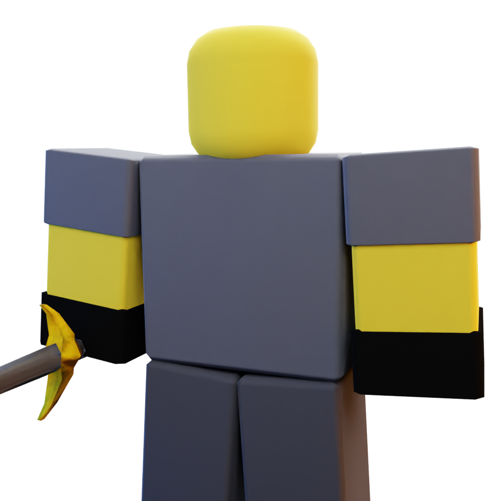
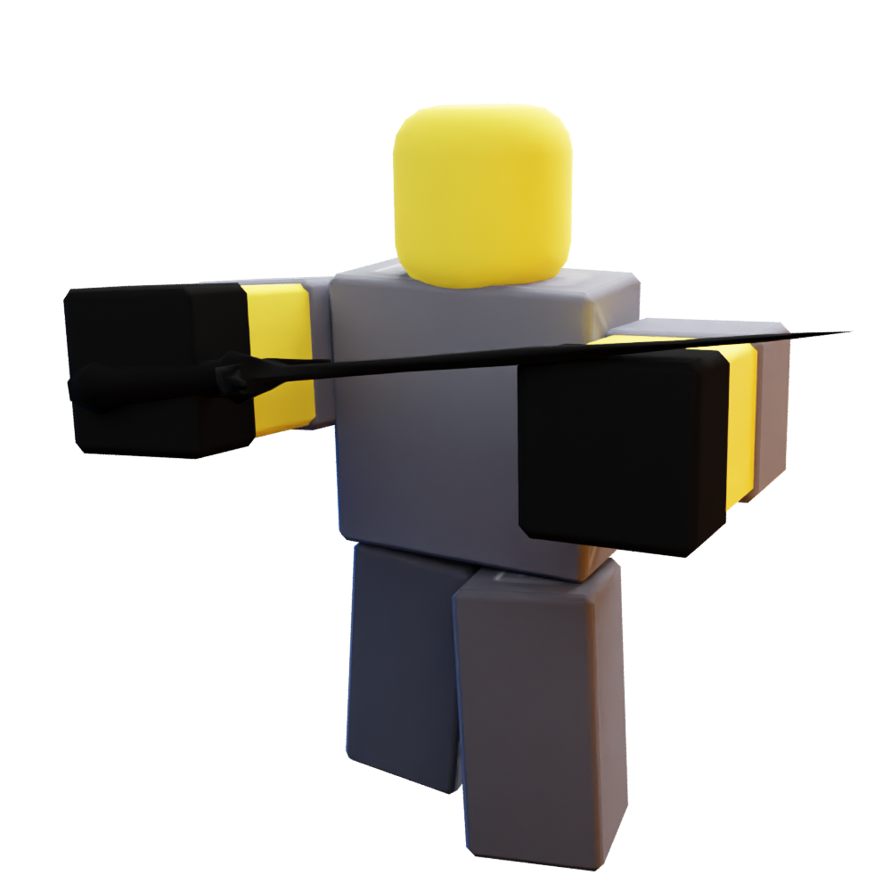
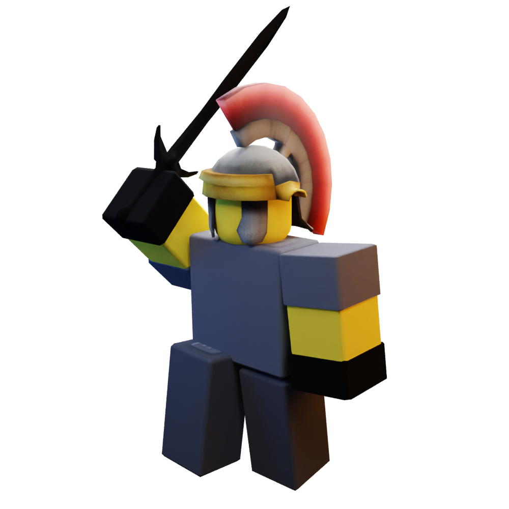

Swordsman
Swordsman
|

|
| Tix Cost |
400 |
| Level Required |
0 |
| Starting Cost |
$300 |
| Damage |
Medium (3) |
| Damage Type |
Meele/Pierce |
| Range |
Tiny (4) |
| Placement |
Ground |
The Sharpshooter is a meele/pierce target tower. At Level 1, the Swordsman attacks every 1 second, with a
range of 4 and dealing 3 damage per swing (3 DPS). It costs 400 Tix and requires no level to purchase.
Appearance
The Swordsman appears as a gray tower, wielding a classic Roblox sword.
Upgrades
Level 2 - Longer Sword 
Cost: $380
- Range increased from 4 to 5. (+1)
- Damage increased from 3 to 8. (+5)
- DPS increased from 3 to 8. (+5)
- Swordsman now has a longer sword.
Level 3 - Geared Up 
Cost: $910
- Damage increased from 8 to 10. (+2)
- Cooldown decreased from 1s to 0.8. (-0.2s)
- DPS increased from 8 to 12.5. (+4.5)
- Swordsman now has hidden detection.
- Swordsman now wears gloves.
Level 4 - Training 
Cost: $2575
- Damage increased from 10 to 18. (+8)
- Cooldown decreased from 0.8s to 0.7s. (-0.1s)
- DPS increased from 12.5 to 25.71. (+13.21)
- Swordsman now has a darkheart.
Level 5 - Gladiator 
Cost: $6990
- Damage increased from 18 to 40. (+22)
- DPS increased from 25.71 to 57.14. (+31.43)
- Swordsman now wears a Galea helmet.
Trivia
- The Swordsman is based off the Gladiator from TDS and the Enforcer from Tower Battles.
- The Swordsman used to not do pierce damage.